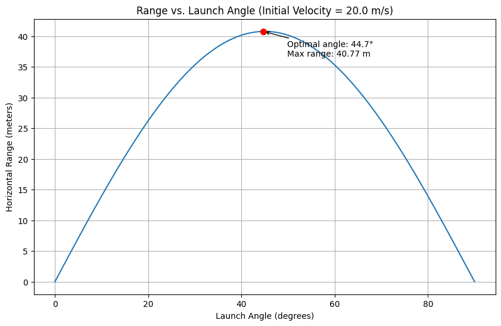
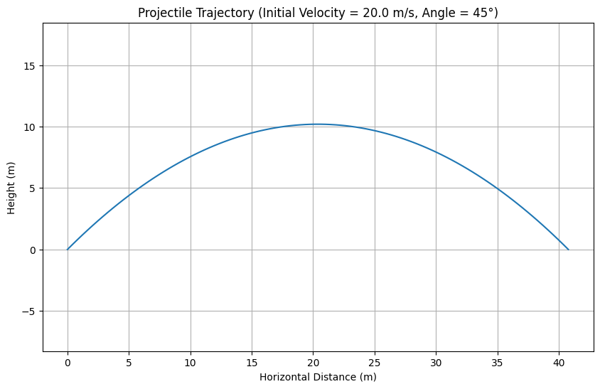
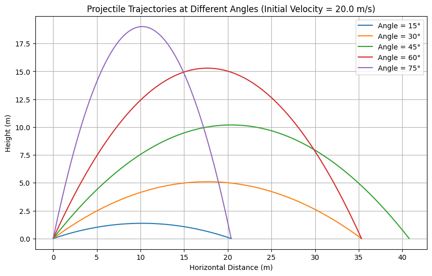

Projectile Motion Analysis: Range vs. Angle of Projection
1. Theoretical Foundation
Basic principles: Projectile motion combines constant horizontal velocity with accelerated vertical motion due to gravity
Horizontal motion:
- No forces act horizontally (ignoring air resistance)
- Acceleration \(a_x = 0\)
- Velocity remains constant: \(v_x = v_0\cos\theta\)
- Position: \(x(t) = v_0\cos\theta \times t\)
Vertical motion:
- Gravity pulls downward: \(a_y = -g\)
- Velocity decreases linearly: \(v_y = v_0\sin\theta - gt\)
- Position: \(y(t) = h_0 + v_0\sin\theta \times t - \frac{1}{2}gt^2\)
Trajectory equation:
- Parabolic path: \(y = h_0 + x\tan\theta - \frac{g\times x^2}{2v_0^2\cos^2\theta}\)
- Different initial conditions create a family of parabolas
2. Range Analysis
Range formula (for ground-level launch):
- \(R = \frac{v_0^2\sin(2\theta)}{g}\)
- Derived by finding when \(y(t) = 0\) and calculating horizontal distance
Angle dependence:
- Maximum range occurs at \(\theta = 45°\) (when \(\sin(2\theta) = 1\))
- Range is symmetric around \(45°\) (e.g., \(30°\) and \(60°\) give same range)
- Zero range at \(0°\) and \(90°\) (purely horizontal or vertical launch)
Parameter effects:
- Velocity: Range \(\propto v_0^2\) (doubling velocity quadruples range)
- Gravity: Range \(\propto \frac{1}{g}\) (lower gravity increases range)
- Initial height: For \(h_0 > 0\), optimal angle \(< 45°\)
3. Practical Applications
Sports applications:
- Basketball: Different shooting angles for different distances
- Golf: Launch angles vary by club and desired trajectory
- Soccer: Kick angles affect distance and height of passes/shots
Engineering applications:
- Water fountains: Different nozzle angles create different arc patterns
- Irrigation systems: Spray patterns optimized for coverage
- Catapults and trebuchets: Medieval engineers used these principles
Space exploration:
- Moon (\(g \approx 1.6 \text{ m/s}^2\)): Same throw goes about \(6\times\) further than on Earth
- Mars (\(g \approx 3.7 \text{ m/s}^2\)): Same throw goes about \(2.7\times\) further than on Earth
4. Implementation
Computational approach:
- Created Python functions to calculate trajectories and ranges
- Used NumPy for calculations and Matplotlib for visualization
Key visualizations:
- Range vs. angle curve showing maximum at \(45°\)
- Multiple trajectory paths at different launch angles
- Parameter variation studies showing effects of initial velocity and gravity
Simulation capabilities:
- Can predict range for any combination of velocity, angle, and gravity
- Visualizes trajectory shapes for different launch conditions
- Compares projectile behavior across different environments
5. Limitations and Extensions
Current limitations:
- No air resistance (unrealistic for many real scenarios)
- Constant gravitational field (only accurate near Earth's surface)
- No accounting for wind or other external forces
Possible improvements:
- Add air resistance (drag proportional to velocity or velocity squared)
- Allow for uneven terrain (different launch and landing heights)
- Include wind effects and Magnus force (for spinning projectiles)
- Use numerical methods for scenarios without analytical solutions
Python Implementation
# Import necessary libraries
import numpy as np
import matplotlib.pyplot as plt
#-------------------------------------------------------------------------
# PART 1: Basic Functions for Projectile Motion
#-------------------------------------------------------------------------
def calculate_range(initial_velocity, angle_degrees, gravity=9.81):
"""
Calculate the horizontal range of a projectile launched from ground level.
Parameters:
initial_velocity: Initial speed in m/s
angle_degrees: Launch angle in degrees
gravity: Gravitational acceleration in m/s^2 (default: Earth's gravity)
Returns:
The horizontal range in meters
"""
# Convert angle from degrees to radians
angle_radians = np.radians(angle_degrees)
# Apply the range formula: R = (v0^2 * sin(2θ)) / g
horizontal_range = (initial_velocity**2 * np.sin(2 * angle_radians)) / gravity
return horizontal_range
#-------------------------------------------------------------------------
# PART 2: Visualization Functions
#-------------------------------------------------------------------------
def plot_range_vs_angle():
"""
Create a plot showing how range varies with launch angle.
"""
# Define parameters
initial_velocity = 20.0 # Initial velocity in m/s
gravity = 9.81 # Earth's gravity in m/s^2
# Create an array of angles from 0 to 90 degrees
angles = np.linspace(0, 90, 180)
# Calculate range for each angle
ranges = []
for angle in angles:
range_value = calculate_range(initial_velocity, angle, gravity)
ranges.append(range_value)
# Find the maximum range and its corresponding angle
max_range_index = np.argmax(ranges)
max_range = ranges[max_range_index]
optimal_angle = angles[max_range_index]
# Create the plot
plt.figure(figsize=(10, 6))
plt.plot(angles, ranges)
# Mark the optimal angle on the plot
plt.scatter(optimal_angle, max_range, color='red', s=50, zorder=5)
plt.annotate(f'Optimal angle: {optimal_angle:.1f}°\nMax range: {max_range:.2f} m',
xy=(optimal_angle, max_range), xytext=(optimal_angle+5, max_range*0.9),
arrowprops=dict(arrowstyle='->'))
# Add labels and title
plt.xlabel('Launch Angle (degrees)')
plt.ylabel('Horizontal Range (meters)')
plt.title(f'Range vs. Launch Angle (Initial Velocity = {initial_velocity} m/s)')
plt.grid(True)
# Save and display the plot
plt.savefig('range_vs_angle.png', dpi=300)
plt.show()
def plot_single_trajectory():
"""
Plot the trajectory of a projectile launched at 45 degrees.
"""
# Define parameters
initial_velocity = 20.0 # Initial velocity in m/s
angle_degrees = 45 # Launch angle in degrees
gravity = 9.81 # Earth's gravity in m/s^2
# Convert angle to radians
angle_radians = np.radians(angle_degrees)
# Calculate time of flight (when projectile returns to ground)
time_of_flight = 2 * initial_velocity * np.sin(angle_radians) / gravity
# Create time points from launch to landing
time_points = np.linspace(0, time_of_flight, 100)
# Calculate x and y positions at each time point
x_positions = initial_velocity * np.cos(angle_radians) * time_points
y_positions = initial_velocity * np.sin(angle_radians) * time_points - 0.5 * gravity * time_points**2
# Create the plot
plt.figure(figsize=(10, 6))
plt.plot(x_positions, y_positions)
# Add labels and title
plt.xlabel('Horizontal Distance (m)')
plt.ylabel('Height (m)')
plt.title(f'Projectile Trajectory (Initial Velocity = {initial_velocity} m/s, Angle = {angle_degrees}°)')
plt.grid(True)
plt.axis('equal') # Equal scaling for x and y
# Save and display the plot
plt.savefig('trajectory_45deg.png', dpi=300)
plt.show()
def plot_multiple_trajectories():
"""
Plot multiple trajectories at different launch angles.
"""
# Define parameters
initial_velocity = 20.0 # Initial velocity in m/s
gravity = 9.81 # Earth's gravity in m/s^2
# Different launch angles to compare
angle_list = [15, 30, 45, 60, 75]
# Create the plot
plt.figure(figsize=(10, 6))
# Plot trajectory for each angle
for angle_degrees in angle_list:
# Convert angle to radians
angle_radians = np.radians(angle_degrees)
# Calculate time of flight
time_of_flight = 2 * initial_velocity * np.sin(angle_radians) / gravity
# Create time points
time_points = np.linspace(0, time_of_flight, 100)
# Calculate positions
x_positions = initial_velocity * np.cos(angle_radians) * time_points
y_positions = initial_velocity * np.sin(angle_radians) * time_points - 0.5 * gravity * time_points**2
# Plot this trajectory
plt.plot(x_positions, y_positions, label=f'Angle = {angle_degrees}°')
# Add labels and title
plt.xlabel('Horizontal Distance (m)')
plt.ylabel('Height (m)')
plt.title(f'Projectile Trajectories at Different Angles (Initial Velocity = {initial_velocity} m/s)')
plt.grid(True)
plt.legend()
# Save and display the plot
plt.savefig('multiple_trajectories.png', dpi=300)
plt.show()
#-------------------------------------------------------------------------
# PART 3: Parameter Analysis
#-------------------------------------------------------------------------
def study_velocity_effect():
"""
Investigate how initial velocity affects the range.
"""
# Define parameters
gravity = 9.81 # Earth's gravity in m/s^2
angles = np.linspace(0, 90, 180) # Angles from 0 to 90 degrees
# Create the plot
plt.figure(figsize=(10, 6))
# Analyze different initial velocities
for velocity in [10, 20, 30]:
# Calculate range for each angle at this velocity
ranges = []
for angle in angles:
range_value = calculate_range(velocity, angle, gravity)
ranges.append(range_value)
# Plot the range curve for this velocity
plt.plot(angles, ranges, label=f'Initial Velocity = {velocity} m/s')
# Add labels and title
plt.xlabel('Launch Angle (degrees)')
plt.ylabel('Horizontal Range (meters)')
plt.title('Effect of Initial Velocity on Projectile Range')
plt.grid(True)
plt.legend()
# Save and display the plot
plt.savefig('velocity_effect.png', dpi=300)
plt.show()
def study_gravity_effect():
"""
Investigate how gravity affects the range (different planets).
"""
# Define parameters
initial_velocity = 20.0 # Initial velocity in m/s
angles = np.linspace(0, 90, 180) # Angles from 0 to 90 degrees
# Gravity values for different celestial bodies (in m/s²)
gravity_values = {
'Earth': 9.81,
'Mars': 3.7,
'Moon': 1.6
}
# Create the plot
plt.figure(figsize=(10, 6))
# Analyze different gravity values
for planet, gravity in gravity_values.items():
# Calculate range for each angle with this gravity
ranges = []
for angle in angles:
range_value = calculate_range(initial_velocity, angle, gravity)
ranges.append(range_value)
# Plot the range curve for this gravity
plt.plot(angles, ranges, label=f'{planet} (g = {gravity} m/s²)')
# Add labels and title
plt.xlabel('Launch Angle (degrees)')
plt.ylabel('Horizontal Range (meters)')
plt.title(f'Effect of Gravity on Projectile Range (Initial Velocity = {initial_velocity} m/s)')
plt.grid(True)
plt.legend()
# Save and display the plot
plt.savefig('gravity_effect.png', dpi=300)
plt.show()
#-------------------------------------------------------------------------
# PART 4: Main Execution
#-------------------------------------------------------------------------
if __name__ == "__main__":
print("=== Investigating the Range as a Function of the Angle of Projection ===")
# 1. Plot range vs. angle relationship
print("\n1. Analyzing how range depends on launch angle...")
plot_range_vs_angle()
# 2. Plot single trajectory at optimal angle
print("\n2. Plotting trajectory at the optimal angle (45°)...")
plot_single_trajectory()
# 3. Compare trajectories at different angles
print("\n3. Comparing trajectories at different launch angles...")
plot_multiple_trajectories()
# 4. Study parameter effects
print("\n4. Studying how initial velocity affects range...")
study_velocity_effect()
print("\n5. Studying how gravity affects range (different planets)...")
study_gravity_effect()
print("\nAnalysis complete! All graphs have been generated.")


